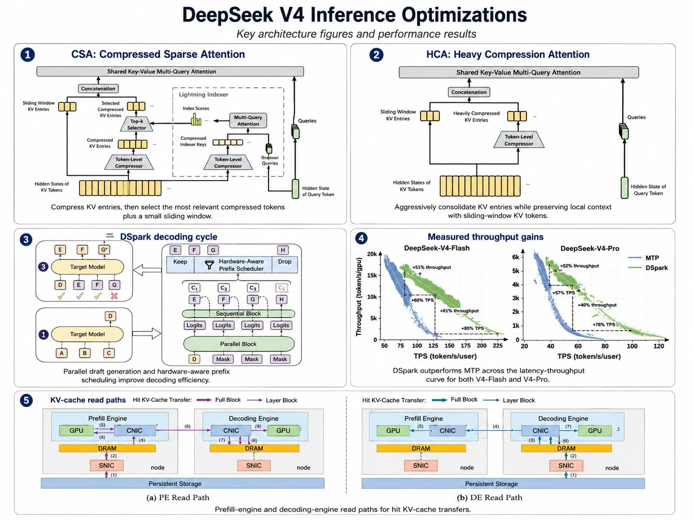
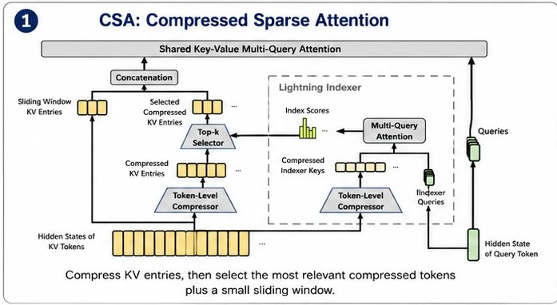
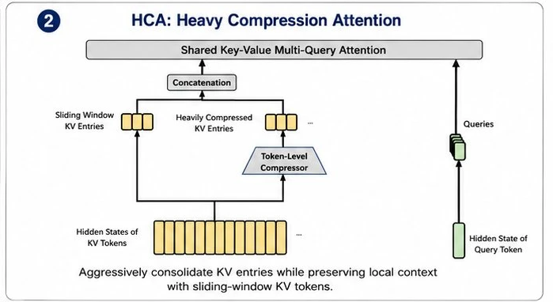
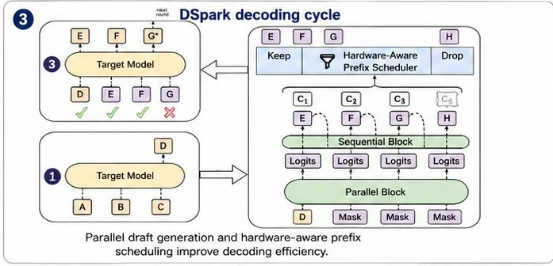
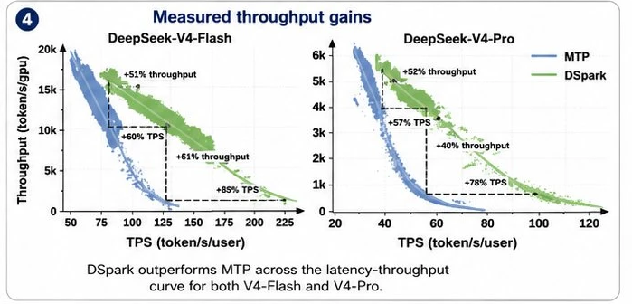
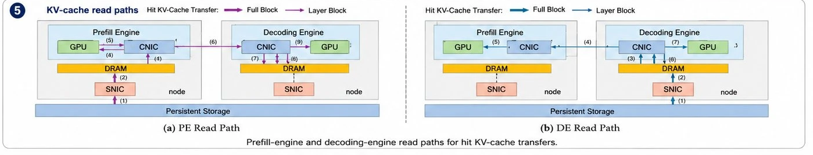
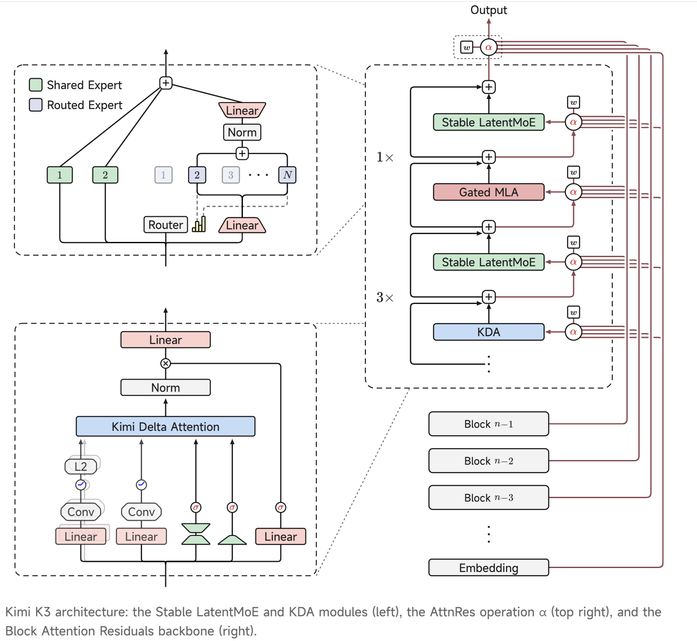

AI 模型层 · 横切研究 · 架构 + 训练方法
国产大模型技术横切
——架构怎么省 + 能力从哪来
核心要点 · 30 秒版
00统一框架：模型技术的两层栈
下面一切都挂在这张栈上：越往上越是护城河，但 GitHub 上只看得到最底层。
能力层（学到什么） ← coding 能力：数据 + RL 可验证奖励 + agentic harness ──────────────────── ⚠️ 几乎不开源，GitHub 看不到 架构层（怎么算） ← 稀疏选择 / 固定状态线性注意力：怎么把 1M 上下文算得起 ──────────────────── ✅ 开源可见（modeling 代码 + 技术报告）
A1标准注意力的两笔账
事实每个 token 投影成 Query / Key / Value。注意力 = 当前 query 和前面每个 Key 点积打分 → softmax → 加权求和 Value。
观点推理分两段：Prefill = 算力密集；Decode = 存力密集（每吐一字都要全读 KV Cache）。长上下文让 KV Cache 爆炸 → 撞"装不下 + 读不动"两堵墙。稀疏注意力的本质就是拆这堵存力墙。而"逐字串行、一次只产一个 token"是另一半瓶颈——A5 的投机解码（DSpark）专拆这条串行链。
A2稀疏注意力的两把刀；KDA 走第三条路
| 路线 | 改了什么 | 砍哪笔账 | 代价 |
|---|---|---|---|
| 压缩 | 让一个 KV 条目代表更多 token（m 个池化成 1 条） | 主砍显存 | 有损，细节可能糊 |
| 选择 | KV 全留，只对最相关 top-k 算注意力 | 主砍算力/带宽 | 要够便宜的打分器 |
| 固定状态记忆 KDA | KDA 层不保留逐 token KV，把历史递归压入固定大小状态矩阵 | KDA 层的解码状态不随上下文线性增长 | 容量有限、不是精确检索，需周期性全注意力补位 |
A3三家机制
A3.1 DeepSeek V4 = 压缩 × 选择（弃用 MLA，两路交错）
⚠️ m=4 / m'=128 精确参数来自 DeepSeek-V4 技术报告（B 级），本地纪要仅提概念性"10:1"。
A3.2 GLM-5.2 = 选择 + 复用选择器（DSA + IndexShare）
A3.3 MiniMax M3 = GQA 之上块状选择（MSA）
A4同序列侧视对比
| 用的刀 | 主砍 | 效果 | |
|---|---|---|---|
| DeepSeek V4 | 压缩×选择 | 存+算 | KV→2% |
| GLM-5.2 | 选择+复用选择器 | 算 | FLOPs→1/2.9 |
| MiniMax M3 | GQA+块状选择 | 存靠GQA/算靠选块 | decode 15×/算力1/20 |
A5投机解码（DSpark）——降本第二把刀：打断"逐字串行"
A1–A4 拆的是"存力墙"（每字都要重读 KV）；推理慢还有另一半——"逐字串行、一次只吐一个 token"。投机解码拆的是这条串行链，与稀疏注意力正交、可叠加。⚠️ 本节数字已逐条核对 DSpark 原论文（DeepSeek-AI + 北京大学，2026-06-27，A 级）。
MTP-1 跑在 V4-Flash/Pro 线上流量——这是 DeepSeek 推理效率长线（MLA→MTP→稀疏注意力→DSpark）第一次直接落到主力产品。A5.1 机制：草稿猜一批，目标模型并行验证（无损）
观点为什么"顺手多验"几乎免费（接 A1 的 roofline）：decode 阶段是存力密集，目标模型验证 1 个 token 和验证 6 个 token，读的权重/KV 几乎一样多——瓶颈是搬数据不是算。算力本来就闲着，投机解码就是拿闲置算力换被带宽卡住的时间。所以它的核心指标是"平均接受长度"。
A5.2 草稿的两条老路 + DSpark 的半自回归
| 路线 | 代表 | 优点 | 死穴 |
|---|---|---|---|
| 自回归草稿 | Eagle3 | 逐个往后写，连贯 | 起草时间随长度线性增长 → 只能写短、网络浅 |
| 并行草稿 | DFlash | 一次出整串，耗时与长度无关 → 能写长 | 各位置独立 → 尾部"多模态碰撞"，接受率往后掉 |
| 半自回归 | DSpark | 并行骨干出整串 + 轻量串行补尾 | 串行模块仅 +0.2–1.3% 延迟 |
事实反直觉发现：并行草稿首位比自回归更准。因并行起草与长度无关 → 网络能做更深 → 第一个 token 接受率反而高（数学 DFlash 0.88 vs Eagle3 0.81；对话 0.72 vs 0.53）。而前缀验证里第一个 token 权重最高（它一被拒后面整串作废）。DSpark 的串行模块默认 Markov head（只看紧邻前一个 token，低秩 r=256，几乎不增计算），把尾部连贯性补回来。
A5.3 第二个创新：让"验证"也按负载动态调度
观点过去两年都在卷"草稿准不准"，DSpark 把矛头指向被忽略的验证成本：高并发下多验一个大概率被拒的 token，就占了目标模型本可服务别人的算力。三步走：
A5.4 效果（原论文 A 级）
| 维度 | 数字 | 口径 |
|---|---|---|
| 平均接受长度 vs Eagle3 | +26.7%–30.9% | 离线 · Qwen3 4B/8B/14B + Gemma4-12B |
| 平均接受长度 vs DFlash | +16.3%–18.4% | 同上 |
| 单用户出字提速 · V4-Flash | +60%–85% | 生产环境 · 同吞吐 vs MTP-1 |
| 单用户出字提速 · V4-Pro | +57%–78% | 同上 |
| 极端档（120 tok/s/user） | 名义 +661% | ⚠️ 扩"可用交互档位"，非真实 6× 提速（论文自注） |
短板：起草第一块草稿是固定开销，遇本身难、接受率低的复杂请求收不回成本；后续方向 = 让草稿模型按难度提前停。｜ 论文署名 DeepSeek-AI + 北京大学（中文公众号"北大合作"准确，英文二手 MarkTechPost 反而漏标北大）。
A·总览三刀一图：QKV → 稀疏 → 投机，各在哪一环动刀
把 A1（QKV 两笔账）+ A2–A4（稀疏）+ A5（投机）缝成一张图：谁在"生成一个 token"的流水线哪一环优化、效果、代价。
| 维度 | QKV 标准注意力 | 稀疏注意力 | 投机解码 |
|---|---|---|---|
| 优化环节 | 基准 · 注意力计算本身 | 注意力计算（单次前向内） | 逐字生成循环（跨前向） |
| 怎么改 | Q·K·V 全算全读 | Q 只和压缩/选出的少数 K 算 | 草稿猜 N 个 → 目标一次并行验证 |
| 砍哪笔账 | 定义两笔账：算力 O(L²)＋存力 O(L) | 存力为主（少读 KV）＋部分算力 | 串行延迟（N 次串行→1 次并行） |
| 效果 | （基准） | 长上下文跑得起 · KV→~2% / decode 15× | 单用户出字 +60~85% · 吃闲置算力 |
| 代价 / 有损 | — | ⚠️ 有损：近似、可能漏远程依赖；需又快又准的选择器/索引器 | ✅ 无损：但多花算力（草稿开销＋被拒 token 验证浪费）；需草稿模型 |
A6硬件投资含义：算力 / 存力 / 连接
算力 · GPU
单 token 算力↓，但 agentic 总量暴涨
- prefill 仍吃稠密
- decode 变稀疏/不规则
- 算法效率成新乘数
存力 · HBM+分层
per-token KV↓，但上下文爆炸对冲
- 1M 上下文变可用
- KV 卸载 CXL/SSD
- 内存层级变厚
连接 · 超节点
稀疏没动它，MoE 让它成第一瓶颈
- scale-up > scale-out
- NVLink/超节点决定性
- 国产超节点对标
观点总算力 ↔ 基建：从"被存力封顶"变成"被算法放大"——每单位基建榨出的有效 token 跃升；但需求增速 > 效率增速，绝对基建仍扩张（Jevons）。竞争力从"卡的数量"部分转向"算法-基础设施协同设计"，部分抵消国产卡硬件劣势——这是对国产算力链最值得记的 read-through。A5 投机解码再叠一层：同一批 GPU 单用户出字 +60–85%，等于在稀疏注意力之上又把"每张卡的有效 token 产出"往上顶——两把刀共同把"国产卡硬件代差"换算成"算法工程领先"去对冲。
A7V4 推理优化五图逐帧解读（07-16 增补）
研究员提供的 DeepSeek V4 推理优化总览图（技术报告图组转绘，B 级），共 5 帧：① CSA ② HCA ③ DSpark 解码循环 ④ 实测吞吐收益 ⑤ KV-cache 读路径。前四帧对应 A3.1 / A5 已有章节，这里对着原图逐帧、逐组件拆；第⑤帧（KV-cache 分层存储读路径）是全新内容——它揭示 KV cache 已经从"显存里的临时变量"变成一个跨 DRAM/SSD/网络的存储层产品。

A7.1 帧①：CSA 压缩稀疏注意力——图上五个组件各干什么

事实对着原图看数据流。起点是底部那排黄色小条（Hidden States of KV Tokens，历史 token 的隐状态），从这里兵分两路，最终汇合到顶部灰色长条（Shared Key-Value Multi-Query Attention）；右侧绿色的 Queries / Hidden State of Query Token 是当前正在生成的 token，它全程只在最后一步进场。图上五个组件：
A7.2 帧②：HCA 重压缩注意力——和 CSA 差在"删掉了选择"

事实把帧②和帧①并排看，差异一眼可见：整个 Lightning Indexer 虚线框、Top-k 选择器、Index Scores 全部消失，只剩一条极简通路——底部 KV 隐状态 → 唯一的梯形 Token-Level Compressor（压得狠得多，A3.1：128 个 token 压 1 条）→ Heavily Compressed KV Entries，与左侧滑动窗口 KV 在 Concatenation 拼接后直接进顶部共享 KV 多查询注意力——对所有压缩块 dense 全看，不做筛选。原图 caption 也点了题："激进合并 KV 条目，同时用滑动窗口 KV 保住局部上下文"。
| 帧① CSA | 帧② HCA | |
|---|---|---|
| 压缩比 | 温和（4:1） | 激进（128:1） |
| 选不选 | 索引器打分选 top-k | 不选，全看（块已极少，全看也便宜） |
| 看到什么 | 远处的细节（选中的块保真度较高） | 远处的大意（每块是 128 token 的梗概） |
| 类比 | 精读选中的章节 | 只看全书目录+摘要 |
观点为什么要两种层交错堆叠（A3.1 图 2 的结论）：CSA 层负责"找得准"，HCA 层负责"看得全"——纯 CSA 怕索引器漏选关键远程依赖，纯 HCA 怕细节全糊；交错后 HCA 层像天上的低分辨率全景雷达，CSA 层像地面的变焦镜头，互补把 KV 压到 ~2% 而精度损失可控。两帧图都保留滑动窗口，说明"近处永远不许糊"是两种层共同的底线。
A7.3 帧③：DSpark 解码循环——一轮循环的三步棋

事实这帧要按图上的圈号 ①→③ 逆时针走一轮（左下 → 右框自下而上 → 左上）：
A7.4 帧④：实测吞吐收益——散点图怎么读、六个百分比各是什么

事实两幅散点图（左 V4-Flash、右 V4-Pro），横轴 TPS = 单用户出字速度（token/s/user），纵轴 Throughput = 单卡总吞吐（token/s/gpu）；蓝色点云 = 上一代 MTP，绿色点云 = DSpark。每朵点云都是一条右下倾斜的前沿——这是推理服务的根本取舍：想让每个用户更快（右移），就得少塞并发，单卡总产出下降（下移）。图上标了 6 个百分比：Flash 侧 +51% throughput / +60% TPS / +61% throughput / +85% TPS，Pro 侧 +52% throughput·+57% TPS / +40% throughput·+78% TPS——同一对点云在不同工作点量出来的数。
观点DSpark 的意义是整条前沿外移，图上虚线就是两种量法的辅助线：竖着量（固定单用户速度，看单卡吞吐多多少）——Flash 在 ~75 TPS 处 +51%、Pro 在 ~40 TPS 处 +52%；横着量（固定单卡吞吐，看用户能快多少）——Flash +60%~85% TPS（越往高速档收益越大，+85% 出现在曲线右端低吞吐区），Pro +57%~78% 同理。同一条曲线的两种切法，对应两种商业化姿势：竖切 = 同样体验下省卡（降成本）；横切 = 同样卡数下提速（卖体验，如 Pro 高速档定价）。A5.4 表里的"+60–85%"就是横切口径。
⚠️ 读图纪律：点云在低 TPS 端收益收窄（两团点云趋近），说明重负载、高并发下闲置算力少，投机解码"拿闲算力换时间"的空间被压缩——收益不是常数，报数字必须带工作点（A5.4 的"极端档名义 +661%"即此陷阱）。
A7.5 帧⑤：KV-cache 读路径——全新内容：KV 变成了一个存储产品

事实这帧图的前提是 PD 分离（Prefill/Decode Disaggregation）：读题（prefill，算力密集）和吐字（decode，存力密集）拆到两组不同的机器上跑，各自按瓶颈配硬件——图上左右两半里都同时画了 Prefill Engine 和 Decoding Engine 两个节点（node），两半的区别不是硬件，而是命中的 KV 从仓库爬进系统的两条不同路线。每个节点内部是一条四层存储阶梯：
节点内的存储阶梯（从慢到快）：
持久化存储 Persistent Storage（跨节点共享的 KV 仓库，容量最大最便宜）
↑ SNIC（Storage NIC · 存储网卡：节点 ↔ 存储网络）
DRAM（主机内存：GPU 显存放不下的 KV 暂存区）
↑ CNIC（Compute NIC · 计算网卡：节点 ↔ 节点，PE→DE 传 KV 走这里）
GPU（HBM 显存：正在算的 KV 才配住这里）
事实先读图例：每半幅里粗箭头 = Full Block（整块搬运）、细箭头 = Layer Block（按层搬运）——注意两种粒度在 PE、DE 两条路径里都有，不是一边一种。按图上的步骤序号走：
观点这帧图的投资 read-through 最直接，是 A6"存力·结构性重排"那张卡的工程实证：① KV cache 正式成为一个跨节点共享的存储层产品——它值得配独立的持久化存储池 + 专用存储网卡（SNIC），意味着推理集群里 DRAM、企业级 SSD、存储网络（NIC/交换）的配比系统性上升，不再是"GPU 之外都是配角"；② PD 分离让"算力机"和"存力机"分开采购——prefill 机堆算力、decode 机堆显存带宽和网络，硬件 SKU 分化；③ 和帧①②同一枚硬币：CSA/HCA 把每 token 的 KV 压到 ~2%，才使得"把海量用户的 KV 长期存下来、随时命中复用"在经济上成立——压缩是让 KV 仓库买得起的前提，仓库是让压缩价值兑现的出口。
A8Kimi K3：KDA + AttnRes + Stable LatentMoE（07-17 增补）
这一节把 K3 的官方架构图拆成三条互相独立的轴：序列长度、模型深度、模型宽度。KDA 只负责第一条；红色跨层连线是 AttnRes，专家路由是 MoE，不能混为同一个创新。

A8.1 先别钻公式：整张图同时优化三个维度
w 计算权重 α，按内容选择该回看哪个深度。块内仍正常残差累加，只在块间做深度注意力，控制保存开销。A8.2 KDA 的本质：不是挑历史 token，而是持续改写一块固定记忆
事实KDA 维护固定大小的关联记忆矩阵 S，而不是让每个历史 token 永久留一份 KV。官方 Kimi Linear 论文给出的递归形式：
Sₜ = (I − βₜ kₜkₜᵀ) Diag(αₜ) Sₜ₋₁ + βₜ kₜvₜᵀ oₜ = Sₜᵀqₜ 等价直觉： 旧记忆先按通道衰减 → 用旧记忆预测当前 value → 只把预测误差 delta 写回 → query 从新记忆读取
观点最直观的类比：标准全注意力是保留全部原始档案、每次重新检索；KDA 是维护一张持续修订的知识表。新材料如果知识表已经会，就少写；如果答案错了，只改差额。这解释了它为什么长上下文便宜，也解释了为什么它不是无损无限记忆。
A8.3 相对 Gated DeltaNet，KDA 真正新增的是“每个通道一只遗忘旋钮”
| 机制 | 历史保存方式 | 遗忘控制 | 核心局限 |
|---|---|---|---|
| Full MLA / Softmax | 保留逐 token KV，可精确回看 | query 动态选历史 token | KV 与解码读取成本随上下文增长 |
| Gated DeltaNet | 固定状态矩阵 | 每个 head 一个标量 α，整头一起忘 | 控制较粗，长期/短期特征被同速衰减 |
| KDA | 固定状态矩阵 | 每个 feature channel 独立 α | 仍是有限容量；β 写入步长仍为标量 |
事实KDA 把 Gated DeltaNet 的 head-wise 标量遗忘率换成 channel-wise 向量。不同语义维度可以拥有不同记忆寿命：主体/变量定义慢忘，局部句法或近期信号快忘。论文同时用专门的 DPLR + chunkwise 算法把递归更新改写为 GPU 友好的块并行计算。
A8.4 收益怎么引用：Kimi Linear 实验 ≠ K3 实际服务数字
| 结论 | 可确认口径 | 不能外推什么 |
|---|---|---|
| KDA/MLA 混合方式 | A·官方图：3×KDA + 1×Gated MLA | 不能据图推出 K3 全模型具体层数和 block 数 |
| KV cache 最多减少 75% | A·Kimi Linear 论文：48B/3B activated 对照实验 | 不是 K3 线上实例的实测显存降幅 |
| 1M 解码最高约 6.3× TPOT | A·Kimi Linear 论文：相对 MLA、特定硬件与实验设置 | 不是所有长度/批量下恒定 6.3×，更不是 K3 端到端加速 |
| K3 scaling efficiency 约 2.5× | A·官方自报：KDA + AttnRes + MoE/训练 recipe 合计 vs K2 | 无法把 2.5× 单独归功于 KDA |
边界：截至 2026-07-17，K3 完整技术报告与权重仍计划在 07-27 前发布。本节 K3 特有结构来自官方博客/架构图；KDA 公式、门控与效率实验来自先行发布的 Kimi Linear 官方论文。后续技术报告若披露不同维度或消融结果，应以 K3 报告刷新。
C0先学会看图：3 分钟读图法 + 四条路线总表
原图来自 GitHub 开源项目 CalvinXKY/InfraTech（已全量镜像到本地 4-模型层/InfraTech开源模型架构图鉴/），是"推理部署视角"的数据流图——每条线都标了数据的形状、每个权重都标了大小，论文概念图从来不画这么细。下面每张图都可以点开放大到算子级。
事实所有图共用一套画法，会看一张就会看全部：左侧竖列 = 模型主干（从下往上：文字进 Tokenizer → 变向量 Embedding → 过几十层"注意力+专家"积木 → LM-Head 吐字，顶上 MTP 是"一次多猜几个字"的加速头）；右侧大框 = 放大镜，把 MoE、MLP、Attention 三种积木拆开画到每一个算子；红色块 = KV cache（推理时驻留显存的"记忆库"，决定长上下文成本的关键）；方括号 = 数据形状，看不懂可以全部跳过，不影响抓主线。
观点11 张图横着比，会发现 MoE 部分（怎么装知识）大家几乎一样——都是几百个小专家、每个字只叫醒 8 个左右；真正的分歧全在 Attention 部分（怎么读上下文），因为上下文越来越长，"读历史"的成本成了推理成本的大头。四条路线按"记忆方式"类比：
| 路线 | 白话类比 | KV cache（记忆库）怎么处理 | 谁在用 |
|---|---|---|---|
| GQA 全注意力 | 逐字全文精读，每个字都回头看全文 | 全存，随上下文线性膨胀 | MiniMax M2.5 · Qwen3-VL · Step(部分层) |
| MLA 低秩压缩 | 全文精读，但笔记先压缩成速记再存 | 每个字只存一小条压缩码（512+64 维） | DeepSeek V3 · Kimi K2 / K2.5 |
| DSA/CSA 稀疏检索 | 先用目录检索挑出最相关的 2048 个字，只精读这些 | 压缩存 + 按需读，读取量不随全文涨 | DeepSeek V3.2 / V4 · GLM-5 |
| 线性/滑窗混合 | 3/4 的层只记"一页固定大小的摘要"，1/4 的层保留精读兜底 | 线性层记忆恒定大小、几乎零 cache | Qwen3.5 · Kimi K3 · Step 3.5 |
深读版（每张图逐个数字讲透）见本地文档：InfraTech开源模型架构图鉴/架构图全解_11模型图解_by_claude.md；与 A3/A7/A8 的关系：A 部讲"机制原理"，本部给"整机图纸"。
C1DeepSeek V3（671B A37B）——全行业的"模板机"
MLA + 细粒度 MoE 范式的定义者 · 后面 10 张图都是它的变体 · GitHub 模型卡

事实注意力机制：MLA（多头潜注意力）——K/V 不按 128 个头原样存，先压成一条 512 维"速记"（图右下 kv_lora_rank=512），位置信息单独走一条 64 维小通道。用时再解压回完整多头。KV cache：只存速记（512+64 维/字），比传统方案省一个数量级——图中两个红块就是全部要存的东西。专家：256 个小专家 + 1 个共享专家，每个字只叫醒 8 个（激活 37B/671B ≈ 5.5%）。
观点独特性一句话：它本身就是"标准"。第一性逻辑：多头之间的记忆高度重复 → 压缩掉重复，用两次小矩阵乘换一个数量级的显存（算力比显存带宽便宜）。看懂这张，后面 10 张只需要看"改了哪"。
C2Kimi K2（1T A32B）——抄对作业，只改四个数字
V3 同构放大版 · GitHub 模型卡

事实注意力机制：与 V3 完全相同的 MLA，但头数 128→64（砍半，长上下文时注意力计算量减半）。KV cache：与 V3 相同的 512 维速记方案。专家：256→384 个（总参数 671B→1T 的主要来源），仍只激活 8 个——总参数涨 50%，每个字的计算成本反而略降（37B→32B）。
观点独特性一句话：K2 证明"架构不创新、参数配比精调"也能做出旗舰——容量用稀疏堆（专家数），成本用激活控（头数、激活专家数），这是 MoE 时代做大模型的标准姿势。
C3DeepSeek V3.2（671B A37B）——给注意力装"检索器"（DSA 首发）
机制原理见 A2/A3 · 这里是整机图纸 · GitHub 模型卡

事实注意力机制：DSA = MLA + 检索。新增的 Indexer 是一个轻量打分头（FP8 低精度跑，够便宜），给所有历史字打相关性分，Select 只挑 top 2048 个最相关的送进注意力精算。KV cache：存的东西和 V3 一样（512 维速记），但每次只读 2048 条——"存全量、读局部"，读取带宽不再随上下文膨胀。专家：与 V3 完全相同。
观点独特性一句话：把"全文精读"改成"先查目录再精读"。上下文越长省得越狠（128K 时注意力计算约省 98%），这是 DeepSeek API 长上下文降价的直接技术底气。
C4GLM-5（744B A40B）——DeepSeek 路线的"最佳实践集成商"
从 GQA 整建制转向 DSA 的第一个非 DeepSeek 旗舰 · GitHub 模型卡

事实注意力机制：与 V3.2 同款 DSA（MLA 底座 + top-2048 检索），头数 64（比 V3.2 砍半）、单头更宽（v_head_dim=256）。KV cache：同 V3.2 的"压缩存 + 检索读"。专家：256+1 选 8，与 V3 完全同构；差异在整体形体——75 层 MoE 比 DeepSeek 的 58 层更深，hidden 6144 更瘦。上下文 200K。
观点独特性一句话：GLM-5 的"独特"恰恰是没有独特——MoE 抄 V3、稀疏抄 V3.2、砍头学 K2，然后自己调深瘦比。印证 DeepSeek 架构已成国产公共底座，头部架构在收敛，竞争重心移向数据、RL 后训练和工程化（与 Part B 结论互为印证）。
C5DeepSeek V4 Pro（1.6T A49B）——1M 上下文的"分级记忆"（全系最复杂）
A7 五图讲机制，这张是整机总装图 · GitHub 模型卡

事实注意力机制：三种混排——CSA（把每 4 个字压成 1 条记忆 + top-1024 检索 + 最近 128 字全精度滑窗）、HCA（每 128 个字压成 1 条，管超远距离）、SWA。KV cache：分级存储——窗口内全保真、中距离 4:1 压缩、远距离 128:1 重压缩，另配 sink 稳定符。这是"KV 从显存临时变量变成分层存储产品"（A7.5）在模型侧的对应物。专家：384 选 6，路由加了 hash 映射（图左上 Router 放大框）。
观点独特性一句话：像人的记忆——工作记忆全保真、近期记忆做摘要、远期只留梗概。1M 上下文能不能算得起，决定 Agent 吃整个代码库/整季财报堆的单位成本，这张图就是成本工程的教科书。
C6Kimi K2.5（1T A32B）——K2 装上眼睛（外挂式多模态）
语言塔零改动 + 视觉塔单点接入 · GitHub 模型卡

事实注意力机制 / KV cache / 专家：语言部分与 K2 完全一致（MLA 64 头 + 384 专家选 8）。新增部分：图片经 ImageProcessor 切块 → 27 层 MoonViT 编码 → PatchMerger 把 2×2 相邻块合一（视觉 token 数除以 4）→ 投影到文字维度并入主干，之后图文 token 完全同权处理。
观点独特性一句话：多模态的"最简接法"——语言模型不动，视觉当外设插上去。好处是语言能力零损失、改造成本最低；代价是视觉信息只在入口注入一次（对照 C10 Qwen3-VL 的多层注入）。
C7Kimi K3（2.8T，草稿版）——线性注意力上桌 + 全系最激进容量
机制细讲见 A8 · 此图为作者按已公开信息预画的草稿，7/27 权重发布后待定稿 · GitHub 模型卡

事实注意力机制：3/4 的层用 KDA（不存逐字记忆，把历史按"预测误差"写进一页固定大小的关联记忆，A8.2 有细讲），1/4 的层用带输出门的 MLA 兜底精确检索。KV cache：KDA 层状态恒定、几乎零 cache，只有 1/4 的 MLA 层还在花 cache 钱——1M 上下文的成本大头直接砍掉四分之三。专家：896+2 选 16，全系最激进，且专家计算包在低维潜空间里（stable latent）。
观点独特性一句话：两头下注——容量堆到 2.8T 之最，成本用线性注意力打平。与 Qwen3.5 各自独立选了"线性:全 = 3:1"，两家收敛到同一比例本身就是重要信号（工程甜点）。定稿后重点核对激活参数量。
C8MiniMax M2.5（229B A10B）——大道至简的反例：全 GQA 不玩花活
用"瘦身"而不是"稀疏"实现低成本 · GitHub 模型卡

事实注意力机制：最经典的 GQA——48 个"提问头"共用 8 个"记忆头"，每个字仍回看全部历史。KV cache：常规方案，随上下文线性膨胀（8 个 KV 头 ×128 维/字），靠 200K 封顶控制上限。专家：256 选 8，单专家很小（intermediate 1536）；全模型激活仅 10B，为 11 家最低；hidden 3072 也是全系最瘦。
观点独特性一句话：别人在注意力上做减法，M2.5 在整个模型上做减法。A10B 意味着单卡并发高、serving 简单稳定，与其"性价比 API + 海外 Agent 产品"定位自洽；代价是超长上下文成本曲线打不平（所以不追 1M）。M1 时代它是线性注意力先驱（Lightning Attention），M2 系反而回撤到 GQA——工程可靠性优先的选择。
C9Qwen3.5 397B-A17B——线性混合注意力的"标准解"
同配方另有 27B Dense 版覆盖低成本档 · GitHub 模型卡

事实注意力机制：3/4 层 Gated DeltaNet（与 KDA 同宗的线性注意力：历史写进固定大小状态，带遗忘门），1/4 层 GQA 加输出门（32 Q 头/2 KV 头——KV 头压到极限）。KV cache：线性层零膨胀，全注意力层每字只存 2 头 ×256 维，全系 cache 最省之一。专家：512 个超小专家选 10（单专家 intermediate 仅 1024），比 DeepSeek 切得更碎。
观点独特性一句话：为"云上高并发低价 serving"而生的架构——A17B + 四分之三层零 cache，同配方从 27B 铺到 397B 全尺寸覆盖，和阿里云"卖吞吐"的商业逻辑严丝合缝。
C10Qwen3-VL 235B-A22B——多模态另一种接法：DeepStack 多层浇灌
与 C6 的单点接入对照着看 · 32B Dense 版共用同一视觉塔 · GitHub 模型卡

事实注意力机制：语言塔是 Qwen3 世代的纯 GQA（64 Q 头/4 KV 头）+ MRoPE（位置编码带时间/宽/高三个轴，视频图片都能编）；无线性混合（VL 系比 3.5 早一代）。KV cache：常规 GQA 方案，视觉 token 与文字 token 同样进 cache（所以图多了上下文很快被吃掉）。专家：128 选 8。独有部件 DeepStack：视觉塔浅层特征保细节（小字、纹理）、深层特征给语义，分三层注入让语言模型两者都拿到。
观点独特性一句话：C6 是"视觉当外设"，C10 是"视觉浇灌进主干"。多层注入换来的是 OCR/图表/文档理解的细粒度优势——Qwen 一贯把文档场景当主打，架构选择与产品定位对得上。
C11Step 3.5 Flash（196B A11B）——滑窗路线代表：只改"看多远"
第三种线性化思路 · GitHub 模型卡

事实注意力机制：3/4 层滑窗注意力——算法不变（还是标准 softmax 注意力），只是每个字只看最近 512 个字；1/4 层全注意力（GQA 64/8 头）负责跨窗口长程依赖。KV cache：滑窗层只存窗口内 512 条，恒定大小；只有全注意力层随上下文涨。专家：288 选 8（单专家 intermediate 1280），前 3 块用 Dense FFN。
观点独特性一句话：线性化的"第三种实现"——DeltaNet/KDA 改算法、SWA 只改视野，最保守但最好训。至此三家（Qwen3.5、Kimi K3、Step 3.5）用三种不同机制独立收敛到"省钱层:精读层 = 3:1"，这个比例本身就是 2026 年的工程共识。A11B + 窗口恒定 cache，同属"高并发低价"档，产品名 Flash 与架构一致。
C·总览11 模型横切速查表
| 模型 | 总参/激活 | 注意力路线 | KV cache 特征 | 专家配置 | 上下文 |
|---|---|---|---|---|---|
| DeepSeek V3 | 671B/37B | MLA 128 头 | 512 维压缩速记 | 256+1 选 8 | 128K |
| Kimi K2 | 1T/32B | MLA 64 头 | 同上 | 384+1 选 8 | 256K |
| DeepSeek V3.2 | 671B/37B | DSA（MLA+top2048 检索） | 压缩存 + 稀疏读 | 256+1 选 8 | 128K |
| GLM-5 | 744B/40B | DSA 64 头 | 压缩存 + 稀疏读 | 256+1 选 8 | 200K |
| DeepSeek V4 Pro | 1.6T/49B | CSA/HCA/SWA 三混 | 分级压缩（4:1 / 128:1）+ 滑窗 | 384+1 选 6 | 1M |
| Kimi K2.5 | 1T/32B | MLA 64 头 + MoonViT | 同 K2 | 384+1 选 8 | 256K |
| Kimi K3（草稿） | 2.8T/? | 3×KDA : 1×Gated MLA | 3/4 层固定状态零膨胀 | 896+2 选 16 | 1M |
| MiniMax M2.5 | 229B/10B | 纯 GQA 48/8 头 | 常规，线性膨胀 | 256 选 8 | 200K |
| Qwen3.5 397B | 397B/17B | 3×DeltaNet : 1×GatedAttn | 3/4 层零膨胀 + 2 KV 头 | 512+1 选 10 | 262K |
| Qwen3-VL 235B | 235B/22B | GQA 64/4 头 + MRoPE + DeepStack | 常规（图文同 cache） | 128 选 8 | 256K |
| Step 3.5 Flash | 196B/11B | 3×滑窗512 : 1×GQA | 3/4 层窗口恒定 | 288+1 选 8 | 256K |
模块级深潜（MLA 为何 prefill/decode 走两套算法、DSA 检索器内部构造）：本地库 deepseek_v3/MLA_MHA·MQA.jpg、deepseek_v3_2/DSA_MHA·MQA.jpg 四张原图 + 架构图全解_11模型图解_by_claude.md 第三节。
B1第一性原理：为什么 coding 吃 RL，不吃架构
观点代码是极少数"对错可被机器自动判定"的能力——写作/对话好不好没有客观判卷器，只能靠人类偏好（RLHF），噪声大上不了规模；代码写完丢沙箱跑测试，通过/不通过是 0/1 客观信号。这解锁 RLVR（可验证奖励强化学习）：模型像 AlphaGo 自我对弈——写码→跑测试→对加分错扣分→自己改→再跑，海量试错自我进化。这是 coding 能力近一年突飞猛进、且和参数/架构关系不大的根本原因。
subagent 实查六家全是这套路：DeepSeek RLVR+GRPO 单阶段、Qwen 2 万并行环境、Kimi MuonClip+数据合成+self-critique、MiniMax self-evolving 100+ 轮、智谱 SWE 可验证测试 RL。差别只在工程怎么做。
B2为什么"去 GitHub diff 代码"基本看不出来
事实subagent 实查六家 repo，三条硬结论：
MoE + GQA + MTP/MLA，架构是 commodity，解释不了分差。modeling.py 也看不到"它怎么学会修 bug 的"。正确对比路径（按信息含量）：① 读各家技术报告的 RL/数据/agentic 章节 → ② 对比开源的训练框架（最能看出工程差距）→ ③ 看统一 harness 下的 SWE-bench Pro。不是 diff 模型代码。
B3智谱真正独一档的领先：把"考场"也开源了
事实唯一能被外部 verify 的智谱差异点 = slime（THUDM/slime，Apache-2.0，v0.3.0/2026-05-31）：完整 agentic RL 训练框架（Megatron 训练 + SGLang rollout + sandbox/verifier/异步多轮 rollout），自述是 GLM-4.5→5.2 全系背后的 RL 框架，且能反过来训 Qwen/DeepSeek/Llama。
对照：Qwen 的 2 万环境、Kimi 的数据合成、MiniMax 的 self-evolution——工程都强，但都锁在自己机房里。别家"开源成品（weights）、藏起厨房（RL infra）"；智谱连厨房一起开源。三层 edge：① 生态绑定 ② 可复现可信度 ③ 社区帮 debug 飞轮。
软解释（专家口径 C 级，不 pass-through）：早期卡位——2022 与 OpenAI Codex 同期做 CodeGeeX，攒了 code 数据 pipeline；战略 all-in coding——MaaS 70% 收入来自 coding。
B4各家 coding 横向对比
| 维度 | 智谱 GLM | DeepSeek | Qwen3-Coder | Kimi K2.5 | MiniMax | 豆包 |
|---|---|---|---|---|---|---|
| 专用 coder | 无(ARC一体) | 无 | ✅ 专用线 | 无 | ✅ coding-first | ✅ Seed-Code |
| weights 开源 | ✅ | ✅ | ✅ | ✅ | ✅ | ❌ 生产闭源 |
| RL infra 开源 | ✅✅ slime | ❌ 闭源 | 🟡 ROLL≠coder | ❌ 仅论文 | ❌ | 🟡 verl 发起 |
| SWE-bench Verified | GLM-5 77.8 | 官72–74/三方43⚠️ | 67→69.6 | 76.8 | M3 80.5 | 78.8(自报) |